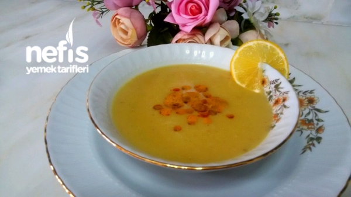

Cenk's Mercimek Çorbası

The Dish:
This is yet another Turkish classic, and doubly so because we love our soups! We have tons and tons of them, but a foundational block of learning Turkish soups is Mercimek Çorbası, the red lentil soup. Of course, it wouldn't be Turkish cooking if it had only lentils. I'll show you how to get started with this basic soup. Cutting to the chase, here's...
What You'll Need
- 200 grams of red lentils
- 3 tablespoons of olive oil
- 1 onion
- 1 potato
- 1 carrot
- 1L of hot water
- 200 mL of broth or chicken broth (1 tablet buillon if you're using buillon cubes)
- 1 tablespoon of lemon juice
- Black pepper
- Salt
- Red pepper flakes (optional)
- Dried mint (optional)
- 1 tablespoon of butter
And here's...
The Recipe
- First, add the oil to your pot. Chop your onion and stir them in until they get pink-ish.
- Grate the potato and carrot.
- Wash and strain the red lentils. Key tip: You should preferably repeat this process until washing the red lentils no longer turns the water white.
- Add the grated potatoes and carrot and stir for about four to five minutes on low heat. If your potato tends to stick to the pot, you can put about half a tea glass (very Turkish measure, get used to it! a generic tea glass is 100mL, so half would be 50mL here!) of water in the pot to help with that.
- Add the broth and hot water. Turn the heat up a little bit.
- Add in the lemon juice and salt and pepper too (Generally, red pepper flakes can be added to the serving bowl after the meal is done, among other things. I will add one such optional step near the end).
- Turn the heat back to low heat when it boils.
- Cook it while constantly stirring until the lentils spread well into the mix.
- Put it all through a blender.
- Optional: Melt butter in a separate small cezve then mix in dried mint and red pepper flakes into the mix as sauce if you want to add flavor and be fancy, then serve.
- Bonus tip: If the soup is too dark of a shade unlike the image, you can add 200-400mL more of hot water.